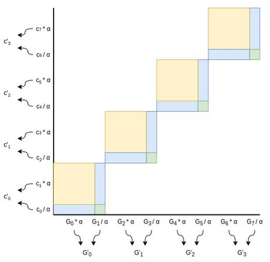
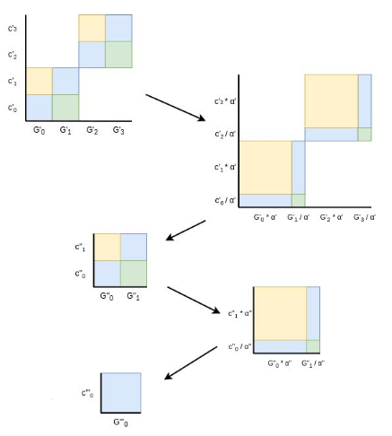
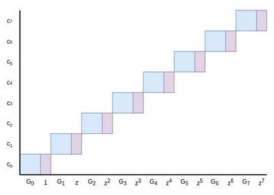
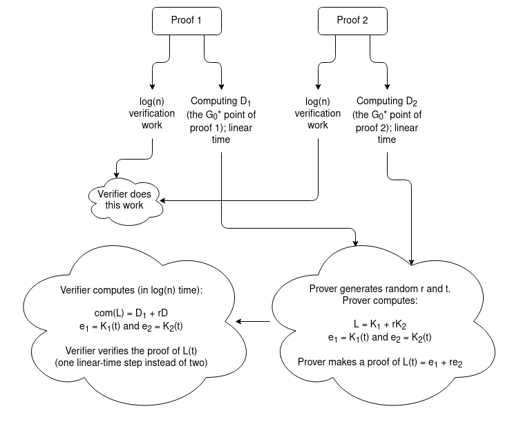
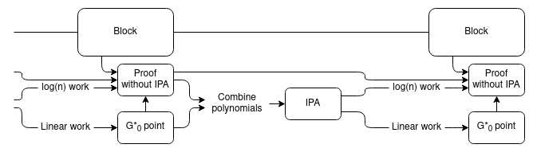
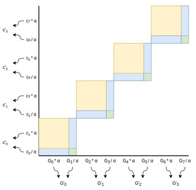
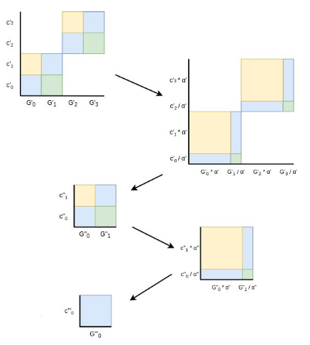
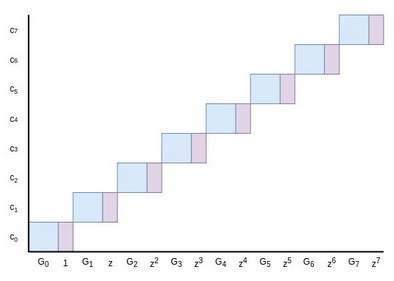
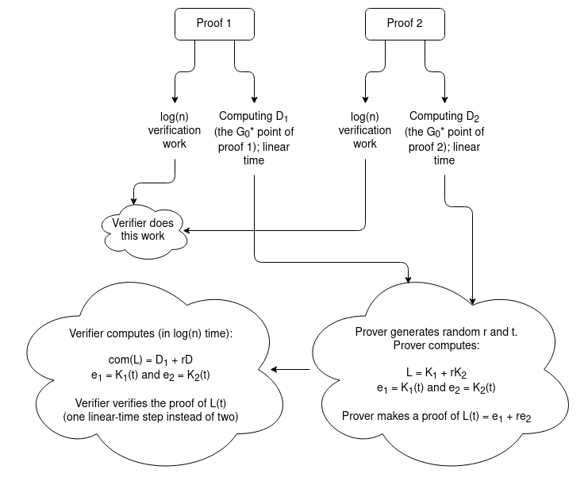
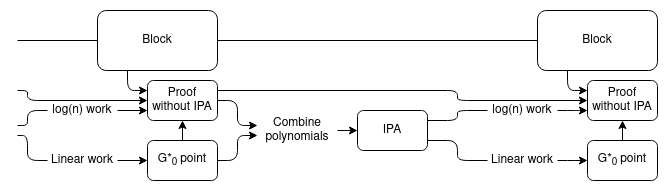

Halo and more: exploring incremental verification and SNARKs without pairings
2021 Nov 05
See all posts
Halo and more: exploring incremental verification and SNARKs without pairings
Special thanks to Justin Drake and Sean Bowe for wonderfully
pedantic and thoughtful feedback and review, and to Pratyush Mishra for
discussion that contributed to the original IPA exposition.
Readers who have been following the ZK-SNARK space closely should by now
be familiar with the high level of how ZK-SNARKs work. ZK-SNARKs are
based on checking equations where the elements going into the equations
are mathematical abstractions like polynomials (or in rank-1 constraint systems
matrices and vectors) that can hold a lot of data. There are three major
families of cryptographic technologies that allow us to represent these
abstractions succinctly: Merkle trees (for FRI), regular elliptic
curves (for inner
product arguments (IPAs)), and elliptic curves with pairings and
trusted setups (for KZG
commitments). These three technologies lead to the three types of
proofs: FRI leads to STARKs, KZG commitments lead to "regular" SNARKs,
and IPA-based schemes lead to bulletproofs. These three technologies
have very distinct tradeoffs:
| FRI |
Hashes only (quantum safe!) |
Large (10-200 kB) |
Medium (poly-logarithmic) |
| Inner product arguments (IPAs) |
Basic elliptic curves |
Medium (1-3 kB) |
Very high (linear) |
| KZG commitments |
Elliptic curves + pairings + trusted setup |
Short (~500 bytes) |
Low (constant) |
So far, the first and the third have seen the most attention. The
reason for this has to do with that pesky right column in the second row
of the table: elliptic curve-based inner product arguments have linear
verification time. What this means that even though the size of
a proof is small, the amount of time needed to verify the proof always
takes longer than just running the computation yourself. This makes IPAs
non-viable for scalability-related ZK-SNARK use cases: there's no point
in using an IPA-based argument to prove the validity of an Ethereum
block, because verifying the proof will take longer than just checking
the block yourself. KZG and FRI-based proofs, on the other hand, really
are much faster to verify than doing the computation yourself, so one of
those two seems like the obvious choice.
More recently, however, there has been a slew of research
into techniques for merging multiple IPA proofs into
one. Much of the initial work on this was done as part of
designing the Halo
protocol which is going
into Zcash. These merging techniques are cheap, and a merged proof
takes no longer to verify than a single one of the proofs that it's
merging. This opens a way forward for IPAs to be useful: instead of
verifying a size-\(n\) computation with
a proof that takes still takes \(O(n)\)
time to verify, break that computation up into smaller size-\(k\) steps, make \(\frac{n}{k}\) proofs for each step, and
merge them together so the verifier's work goes down to a little more
than \(O(k)\). These techniques also
allow us to do incremental verification: if new things keep
being introduced that need to be proven, you can just keep taking the
existing proof, mixing it in with a proof of the new statement, and
getting a proof of the new combined statement out. This is really useful
for verifying the integrity of, say, an entire blockchain.
So how do these techniques work, and what can they do? That's exactly
what this post is about.
Background: how
do inner product arguments work?
Inner product arguments are a proof scheme that can work over many
mathematical structures, but usually we focus on IPAs over elliptic curve
points. IPAs can be made over simple elliptic curves, theoretically
even Bitcoin and Ethereum's secp256k1 (though some
special properties are preferred to make FFTs more efficient); no need
for insanely complicated pairing schemes that despite having written an
explainer article
and an implementation
I can still barely understand myself.
We'll start off with the commitment scheme, typically called
Pedersen vector commitments. To be able to commit to
degree \(< n\) polynomials, we first
publicly choose a set of base points, \(G_0
... G_{n-1}\). These points can be generated through a
pseudo-random procedure that can be re-executed by anyone (eg. the x
coordinate of \(G_i\) can be \(hash(i, j)\) for the lowest integer \(j \ge 0\) that produces a valid point);
this is not a trusted setup as it does not rely on any specific
party to introduce secret information.
To commit to a polynomial \(P(x) = \sum_i
c_i x^i\), the prover computes \(com(P)
= \sum_i c_i G_i\). For example, \(com(x^2 + 4)\) would equal \(G_2 + 4 * G_0\) (remember, the \(+\) and \(*\) here are elliptic
curve addition and multiplication). Cryptographers will also often
add an extra \(r \cdot H\) hiding
parameter for privacy, but for simplicity of exposition we'll ignore
privacy for now; in general, it's not that hard to add privacy into all
of these schemes.

Though it's not really mathematically accurate to think of
elliptic curve points as being like real numbers that have sizes, area
is nevertheless a good intuition for thinking about linear combinations
of elliptic curve points like we use in these commitments. The blue area
here is the value of the Pedersen commitment \(C = \sum_i c_i G_i\) to the polynomial
\(P = \sum_i c_i x^i\).
Now, let's get into how the proof works. Our final goal will
be a polynomial evaluation proof: given some \(z\), we want to make a proof that \(P(z) = a\), where this proof can be
verified by anyone who has the commitment \(C
= com(P)\). But first, we'll focus on a simpler task:
proving that \(C\) is a valid
commitment to any polynomial at all - that is, proving
that \(C\) was constructed by taking a
linear combination \(\sum_i c_i G_i\)
of the points \(\{G_0 ... G_{n-1}\}\),
without anything else mixed in.
Of course, technically any point is some multiple of \(G_0\) and so it's theoretically a valid
commitment of something, but what we care about is proving that the
prover knows some \(\{c_0 ...
c_{n-1}\}\) such that \(\sum_i c_i G_i
= C\). A commitment \(C\) cannot
commit to multiple distinct polynomials that the prover knows
about, because if it could, that would imply that elliptic curves
are broken.
The prover could, of course, just provide \(\{c_0 ... c_{n-1}\}\) directly and let the
verifier check the commitment. But this takes too much space. So
instead, we try to reduce the problem to a smaller problem of half the
size. The prover provides two points, \(L\) and \(R\), representing the yellow and green
areas in this diagram:

You may be able to see where this is going: if you add \(C + L + R\) together (remember: \(C\) was the original commitment, so the
blue area), the new combined point can be expressed as a sum of
four squares instead of eight. And so now, the prover could
finish by providing only four sums, the widths of each of the new
squares. Repeat this protocol two more times, and we're down to a single
full square, which the prover can prove by sending a single value
representing its width.
But there's a problem: if \(C\) is
incorrect in some way (eg. the prover added some extra point \(H\) into it), then the prover could just
subtract \(H\) from \(L\) or \(R\) to compensate for it. We plug this hole
by randomly scaling our points after the prover provides \(L\) and \(R\):

Choose a random factor \(\alpha\)
(typically, we set \(\alpha\) to be the
hash of all data added to the proof so far, including the \(L\) and \(R\), to ensure the verifier can also
compute \(\alpha\)). Every even \(G_i\) point gets scaled by \(\alpha\), every odd \(G_i\) point gets scaled down by
the same factor. Every odd coefficient gets scaled up by \(\alpha\) (notice the flip), and every even
coefficient gets scaled down by \(\alpha\). Now, notice that:
- The yellow area (\(L\)) gets
multiplied by \(\alpha^2\) (because
every yellow square is scaled up by \(\alpha\) on both dimensions)
- The green area (\(R\)) gets divided
by \(\alpha^2\) (because every green
square is scaled down by \(\alpha\) on
both dimensions)
- The blue area (\(C\)) remains
unchanged (because its width is scaled up but its height is scaled
down)
Hence, we can generate our new half-size instance of the problem with
some simple transformations:
- \(G'_{i} = \alpha G_{2i} +
\frac{G_{2i+1}}{\alpha}\)
- \(c'_{i} = \frac{c_{2i}}{\alpha} +
\alpha c_{2i+1}\)
- \(C' = C + \alpha^2 L +
\frac{R}{\alpha^2}\)
(Note: in some implementations you instead do \(G'_i = \alpha G_{2i} + G_{2i+1}\) and
\(c'_i = c_{2i} + \alpha c_{2i+1}\)
without dividing the odd points by \(\alpha\). This makes the equation \(C' = \alpha C + \alpha^2 L + R\), which
is less symmetric, but ensures that the function to compute any \(G'\) in any round of the protocol
becomes a polynomial without any division. Yet another
alternative is to do \(G'_i = \alpha
G_{2i} + G_{2i+1}\) and \(c'_i =
c_{2i} + \frac{c_{2i+1}}{\alpha}\), which avoids any \(\alpha^2\) terms.)
And then we repeat the process until we get down to one point:

Finally, we have a size-1 problem: prove that the final modified
\(C^*\) (in this diagram it's \(C'''\) because we had to do
three iterations, but it's \(log(n)\)
iterations generally) equals the final modified \(G^*_0\) and \(c^*_0\). Here, the prover just provides
\(c^*_0\) in the clear, and the
verifier checks \(c^*_0 G^*_0 = C^*\).
Computing \(c^*_0\) required being able
to compute a linear combination of \(\{c_0 ...
c_{n-1}\}\) that was not known ahead of time, so providing it and
verifying it convinces the verifier that the prover actually does know
all the coefficients that go into the commitment. This concludes the
proof.
Recapping:
- The statement we are proving is that \(C\) is a commitment to some
polynomial \(P(x) = \sum_i c_i x^i\)
committed to using the agreed-upon base points \(\{G_0 ... G_{n-1}\}\)
- The proof consists of \(log(n)\)
pairs of \((L, R)\) values,
representing the yellow and green areas at each step. The prover also
provides the final \(c^*_0\)
- The verifier walks through the proof, generating the \(\alpha\) value at each step using the same
algorithm as the prover and computing the new \(C'\) and \(G'_i\) values (the verifier doesn't
know the \(c_i\) values so they can't
compute any \(c'_i\) values)
- At the end, they check whether or not \(c^*_0 G^*_0 = C^*\)
On the whole, the proof contains \(2 *
log(n)\) elliptic curve points and one number (for pedants: one
field element). Verifying the proof takes logarithmic time in
every step except one: computing the new \(G'_i\) values. This step is,
unfortunately, linear.
See also: Dankrad
Feist's more detailed explanation of inner product
arguments.
Extension to polynomial
evaluations
We can extend to polynomial evaluations with a simple clever trick.
Suppose we are trying to prove \(P(z) =
a\). The prover and the verifier can extend the base points \(G_0 ... G_{n-1}\) by attaching powers of
\(z\) to them: the new base points
become \((G_0, 1), (G_1, z) ... (G_{n-1},
z^{n-1})\). These pairs can be treated as mathematical objects
(for pedants: group elements) much like elliptic curve points
themselves; to add them you do so element-by-element: \((A, x) + (B, y) =\) \((A + B,\ x + y)\), using elliptic curve
addition for the points and regular field addition for the numbers.
We can make a Pedersen commitment using this extended base!

Now, here's a puzzle. Suppose \(P(x) =
\sum_i c_i x^i\), where \(P(z) =
a\), would have a commitment \(C =
\sum_i c_i G_i\) if we were to use the regular elliptic curve
points we used before as a base. If we use the pairs \((G_i, z^i)\) as a base instead, the
commitment would be \((C, y)\) for some
\(y\). What must be the value of \(y\)?
The answer is: it must be equal to \(a\)! This is easy to see: the commitment is
\((C, y) = \sum_i c_i (G_i, z^i)\),
which we can decompose as \((\sum_i c_i G_i,\
\sum_i c_i z^i)\). The former is equal to \(C\), and the latter is just the evaluation
\(P(z)\)!
Hence, if \(C\) is a "regular"
commitment to \(P\) using \(\{G_0 ... G_{n-1}\}\) as a base, then to
prove that \(P(z) = a\) we need only
use the same protocol above, but proving that \((C, a)\) is a valid commitment using \((G_0, 1), (G_1, z) ... (G_{n-1}, z^{n-1})\)
as a base!
Note that in practice, this is usually done slightly differently as
an optimization: instead of attaching the numbers to the points and
explicitly dealing with structures of the form \((G_i, z^i)\), we add another randomly
chosen base point \(H\) and express it
as \(G_i + z^i H\). This saves
space.
See here
for an example implementation of this whole protocol.
So, how do we combine these
proofs?
Suppose that you are given two polynomial evaluation proofs, with
different polynomials and different evaluation points, and want to make
a proof that they are both correct. You have:
- Proof \(\Pi_1\) proving that \(P_1(z_1) = y_1\), where \(P_1\) is represented by \(com(P_1) = C_1\)
- Proof \(\Pi_2\) proving that \(P_2(z_2) = y_2\), where \(P_2\) is represented by \(com(P_2) = C_2\)
Verifying each proof takes linear time. We want to make a proof that
proves that both proofs are correct. This will still take linear time,
but the verifier will only have to make one round of linear
time verification instead of two.
We start off with an observation. The only linear-time step in
performing the verification of the proofs is computing the \(G'_i\) values. This is \(O(n)\) work because you have to combine
\(\frac{n}{2}\) pairs of \(G_i\) values into \(G'_i\) values, then \(\frac{n}{4}\) pairs of \(G'_i\) values into \(G''_i\) values, and so on, for a
total of \(n\) combinations of pairs.
But if you look at the algorithm carefully, you will notice that we
don't actually need any of the intermediate \(G'_i\) values; we only need the final
\(G^*_0\). This \(G^*_0\) is a linear combination of the
initial \(G_i\) values. What are the
coefficients to that linear combination? It turns out that the \(G_i\) coefficient is the \(X^i\) term of this polynomial:
\[(X + \alpha_1) * (X^2 + \alpha_2)\ *\
...\ *\ (X^{\frac{n}{2}} + \alpha_{log(n)}) \]
This is using the \(C' = \alpha C +
\alpha^2 L + R\) version we mentioned above. The ability to
directly compute \(G^*_0\) as a linear
combination already cuts down our work to \(O(\frac{n}{log(n)})\) due to fast
linear combination algorithms, but we can go further.
The above polynomial has degree \(n -
1\), with \(n\) nonzero
coefficients. But its un-expanded form has size \(log(n)\), and so you can evaluate
the polynomial at any point in \(O(log(n))\) time. Additionally, you might
notice that \(G^*_0\) is a commitment
to this polynomial, so we can directly prove evaluations! So
here is what we do:
- The prover computes the above polynomial for each proof; we'll call
these polynomials \(K_1\) with \(com(K_1) = D_1\) and \(K_2\) with \(com(K_2) = D_2\). In a "normal"
verification, the verifier would be computing \(D_1\) and \(D_2\) themselves as these are just the
\(G^*_0\) values for their respective
proofs. Here, the prover provides \(D_1\) and \(D_2\) and the rest of the work is proving
that they're correct.
- To prove the correctness of \(D_1\)
and \(D_2\) we'll prove that they're
correct at a random point. We choose a random point \(t\), and evaluate both \(e_1 = K_1(t)\) and \(e_2 = K_2(t)\)
- The prover generates a random linear combination \(L(x) = K_1(x) + rK_2(x)\) (and the verifier
can generate \(com(L) = D_1 + rD_2\)).
The prover now just needs to make a single proof that \(L(t) = e_1 + re_2\).

The verifier still needs to do a bunch of extra steps, but all of
those steps take either \(O(1)\) or
\(O(log(n))\) work: evaluate \(e_1 = K_1(t)\) and \(e_2 = K_2(t)\), calculate the \(\alpha_i\) coefficients of both \(K_i\) polynomials in the first place, do
the elliptic curve addition \(com(L) = D_1 +
rD_2\). But this all takes vastly less than linear time, so all
in all we still benefit: the verifier only needs to do the linear-time
step of computing a \(G^*_0\) point
themselves once.
This technique can easily be generalized to merge \(m > 2\) signatures.
From merging
IPAs to merging IPA-based SNARKs: Halo
Now, we get into the core mechanic of the Halo protocol being
integrated in Zcash, which uses this proof combining technique to create
a recursive proof system. The setup is simple: suppose you have a chain,
where each block has an associated IPA-based SNARK (see here for how generic SNARKs
from polynomial commitments work) proving its correctness. You want to
create a new block, building on top of the previous tip of the chain.
The new block should have its own IPA-based SNARK proving the
correctness of the block. In fact, this proof should cover both the
correctness of the new block and the correctness of the
previous block's proof of the correctness of the entire chain before
it.
IPA-based proofs by themselves cannot do this, because a proof of a
statement takes longer to verify than checking the statement itself, so
a proof of a proof will take even longer to verify than both proofs
separately. But proof merging can do it!

Essentially, we use the usual "recursive SNARK" technique to verify
the proofs, except the "proof of a proof" part is only proving the
logarithmic part of the work. We add an extra chain of aggregate proofs,
using a trick similar to the proof merging scheme above, to handle the
linear part of the work. To verify the whole chain, the verifier need
only verify one linear-time proof at the very tip of the chain.
The precise details are somewhat different from the exact
proof-combining trick in the previous section for efficiency reasons.
Instead of using the proof-combining trick to combine multiple proofs,
we use it on a single proof, just to re-randomize the point
that the polynomial committed to by \(G^*_0\) needs to be evaluated at. We then
use the same newly chosen evaluation point to evaluate the
polynomials in the proof of the block's correctness, which allows us to
prove the polynomial evaluations together in a single IPA.
Expressed in math:
- Let \(P(z) = a\) be the previous
statement that needs to be proven
- The prover generates \(G^*_0\)
- The prover proves the correctness of the new block plus the
logarithmic work in the previous statements by generating a PLONK
proof: \(Q_L * A + Q_R * B + Q_O * C + Q_M
* A * B + Q_C = Z * H\)
- The prover chooses a random point \(t\), and proves the evaluation of a linear
combination of \(\{G^*_0,\ Q_L,\ A,\ Q_R,\ B,\
Q_O,\ C,\ Q_M,\ Q_C,\ Z,\ H\}\) at \(t\). We can then check the above equation,
replacing each polynomial with its now-verified evaluation at \(t\), to verify the PLONK proof.
Incremental
verification, more generally
The size of each "step" does not need to be a full block
verification; it could be something as small as a single step of a
virtual machine. The smaller the steps the better: it ensures that the
linear work that the verifier ultimately has to do at the end is less.
The only lower bound is that each step has to be big enough to contain a
SNARK verifying the \(log(n)\) portion
of the work of a step.
But regardless of the fine details, this mechanism allows us to make
succinct and easy-to-verify SNARKs, including easy support for recursive
proofs that allow you to extend proofs in real time as the computation
extends and even have different provers to do different parts of the
proving work, all without pairings or a trusted setup! The main downside
is some extra technical complexity, compared with a "simple"
polynomial-based proof using eg. KZG-based commitments.
| FRI |
Hashes only (quantum safe!) |
Large (10-200 kB) |
Medium (poly-logarithmic) |
| Inner product arguments (IPAs) |
Basic elliptic curves |
Medium (1-3 kB) |
Very high (linear) |
| KZG commitments |
Elliptic curves + pairings + trusted setup |
Short (~500 bytes) |
Low (constant) |
| IPA + Halo-style aggregation |
Basic elliptic curves |
Medium (1-3 kB) |
Medium (constant but higher than KZG) |
Not just polynomials!
Merging R1CS proofs
A common alternative to building SNARKs out of polynomial games is
building SNARKs out of matrix-vector multiplication games. Polynomials
and vectors+matrices are both natural bases for SNARK protocols because
they are mathematical abstractions that can store and compute over large
amounts of data at the same time, and that admit commitment schemes that
allow verifiers to check equations quickly.
In R1CS (see a more detailed description here), an instance of the game
consists of three matrices \(A\), \(B\), \(C\), and a solution is a vector \(Z\) such that \((A \cdot Z) \circ (B \cdot Z) = C \cdot Z\)
(the problem is often in practice restricted further by requiring the
prover to make part of \(Z\) public and
requiring the last entry of \(Z\) to be
1).
An R1CS instance with a single constraint (so \(A\), \(B\)
and \(C\) have width 1), with a
satisfying \(Z\) vector, though notice
that here the \(Z\) appears on the left
and has 1 in the top position instead of the bottom.
Just like with polynomial-based SNARKs, this R1CS game can be turned
into a proof scheme by creating commitments to \(A\), \(B\)
and \(C\), requiring the prover to
provide a commitment to (the private portion of) \(Z\), and using fancy proving tricks to
prove the equation \((A \cdot Z) \circ (B
\cdot Z) = C \cdot Z\), where \(\circ\) is item-by-item multiplication,
without fully revealing any of these objects. And just like with IPAs,
this R1CS game has a proof merging scheme!
Ioanna Tzialla et al describe such a scheme in a recent paper (see page
8-9 for their description). They first modify the game by introducing an
expanded equation:
\[ (A \cdot Z) \circ (B \cdot Z) - u * (C
\cdot Z) = E\]
For a "base" instance, \(u = 1\) and
\(E = 0\), so we get back the original
R1CS equation. The extra slack variables are added to make aggregation
possible; aggregated instances will have other values of \(u\) and \(E\). Now, suppose that you have two
solutions to the same instance, though with different \(u\) and \(E\) variables:
\[(A \cdot Z_1) \circ (B \cdot Z_1) - u_1
* (C \cdot Z_1) = E_1\]
\[(A \cdot Z_2) \circ (B \cdot Z_2) - u_2
* (C \cdot Z_2) = E_2\]
The trick involves taking a random linear combination \(Z_3 = Z_1 + r Z_2\), and making the
equation work with this new value. First, let's evaluate the left
side:
\[ (A \cdot (Z_1 + rZ_2)) \circ (B \cdot
(Z_1 + rZ_2)) - (u_1 + ru_2)*(C \cdot (Z_1 + rZ_2)) \]
This expands into the following (grouping the \(1\), \(r\)
and \(r^2\) terms together):
\[(A \cdot Z_1) \circ (B \cdot Z_1) - u_1
* (C \cdot Z_1)\]
\[r((A \cdot Z_1) \circ (B \cdot Z_2) + (A
\cdot Z_2) \circ (B \cdot Z_1) - u_1 * (C \cdot Z_2) - u_2 * (C \cdot
Z_1))\]
\[r^2((A \cdot Z_2) \circ (B \cdot Z_2) -
u_2 * (C \cdot Z_2))\]
The first term is just \(E_1\); the
third term is \(r^2 * E_2\). The middle
term is very similar to the cross-term (the yellow + green areas) near
the very start of this post. The prover simply provides the middle term
(without the \(r\) factor), and just
like in the IPA proof, the randomization forces the prover to be
honest.
Hence, it's possible to make merging schemes for R1CS-based protocols
too. Interestingly enough, we don't even technically need to have a
"succinct" protocol for proving the \[ (A
\cdot Z) \circ (B \cdot Z) = u * (C \cdot Z) + E\] relation at
the end; instead, the prover could just prove by opening all the
commitments directly! This would still be "succinct" because the
verifier would only need to verify one proof that actually represents an
arbitrarily large number of statements. However, in practice having a
succinct protocol for this last step is better because it keeps the
proofs smaller, and Tzialla et al's paper
provides such a protocol too (see page 10).
Recap
- We don't know of a way to make a commitment to a size-\(n\) polynomial where evaluations of the
polynomial can be verified in \(<
O(n)\) time directly. The best that we can do is make a \(log(n)\) sized proof, where all of the work
to verify it is logarithmic except for one final \(O(n)\)-time piece.
- But what we can do is merge multiple proofs together. Given
\(m\) proofs of evaluations of
size-\(n\) polynomials, you can make a
proof that covers all of these evaluations, that takes
logarithmic work plus a single size-\(n\) polynomial proof to verify.
- With some clever trickery, separating out the logarithmic parts from
the linear parts of proof verification, we can leverage this to make
recursive SNARKs.
- These recursive SNARKs are actually more efficient than doing
recursive SNARKs "directly"! In fact, even in contexts where direct
recursive SNARKs are possible (eg. proofs with KZG commitments),
Halo-style techniques are typically used instead because they are more
efficient.
- It's not just about polynomials; other games used in SNARKs like
R1CS can also be aggregated in similar clever ways.
- No pairings or trusted setups required!
The march toward faster and more efficient and safer ZK-SNARKs just
keeps going...
Halo and more: exploring incremental verification and SNARKs without pairings
2021 Nov 05 See all postsSpecial thanks to Justin Drake and Sean Bowe for wonderfully pedantic and thoughtful feedback and review, and to Pratyush Mishra for discussion that contributed to the original IPA exposition.
Readers who have been following the ZK-SNARK space closely should by now be familiar with the high level of how ZK-SNARKs work. ZK-SNARKs are based on checking equations where the elements going into the equations are mathematical abstractions like polynomials (or in rank-1 constraint systems matrices and vectors) that can hold a lot of data. There are three major families of cryptographic technologies that allow us to represent these abstractions succinctly: Merkle trees (for FRI), regular elliptic curves (for inner product arguments (IPAs)), and elliptic curves with pairings and trusted setups (for KZG commitments). These three technologies lead to the three types of proofs: FRI leads to STARKs, KZG commitments lead to "regular" SNARKs, and IPA-based schemes lead to bulletproofs. These three technologies have very distinct tradeoffs:
So far, the first and the third have seen the most attention. The reason for this has to do with that pesky right column in the second row of the table: elliptic curve-based inner product arguments have linear verification time. What this means that even though the size of a proof is small, the amount of time needed to verify the proof always takes longer than just running the computation yourself. This makes IPAs non-viable for scalability-related ZK-SNARK use cases: there's no point in using an IPA-based argument to prove the validity of an Ethereum block, because verifying the proof will take longer than just checking the block yourself. KZG and FRI-based proofs, on the other hand, really are much faster to verify than doing the computation yourself, so one of those two seems like the obvious choice.
More recently, however, there has been a slew of research into techniques for merging multiple IPA proofs into one. Much of the initial work on this was done as part of designing the Halo protocol which is going into Zcash. These merging techniques are cheap, and a merged proof takes no longer to verify than a single one of the proofs that it's merging. This opens a way forward for IPAs to be useful: instead of verifying a size-\(n\) computation with a proof that takes still takes \(O(n)\) time to verify, break that computation up into smaller size-\(k\) steps, make \(\frac{n}{k}\) proofs for each step, and merge them together so the verifier's work goes down to a little more than \(O(k)\). These techniques also allow us to do incremental verification: if new things keep being introduced that need to be proven, you can just keep taking the existing proof, mixing it in with a proof of the new statement, and getting a proof of the new combined statement out. This is really useful for verifying the integrity of, say, an entire blockchain.
So how do these techniques work, and what can they do? That's exactly what this post is about.
Background: how do inner product arguments work?
Inner product arguments are a proof scheme that can work over many mathematical structures, but usually we focus on IPAs over elliptic curve points. IPAs can be made over simple elliptic curves, theoretically even Bitcoin and Ethereum's secp256k1 (though some special properties are preferred to make FFTs more efficient); no need for insanely complicated pairing schemes that despite having written an explainer article and an implementation I can still barely understand myself.
We'll start off with the commitment scheme, typically called Pedersen vector commitments. To be able to commit to degree \(< n\) polynomials, we first publicly choose a set of base points, \(G_0 ... G_{n-1}\). These points can be generated through a pseudo-random procedure that can be re-executed by anyone (eg. the x coordinate of \(G_i\) can be \(hash(i, j)\) for the lowest integer \(j \ge 0\) that produces a valid point); this is not a trusted setup as it does not rely on any specific party to introduce secret information.
To commit to a polynomial \(P(x) = \sum_i c_i x^i\), the prover computes \(com(P) = \sum_i c_i G_i\). For example, \(com(x^2 + 4)\) would equal \(G_2 + 4 * G_0\) (remember, the \(+\) and \(*\) here are elliptic curve addition and multiplication). Cryptographers will also often add an extra \(r \cdot H\) hiding parameter for privacy, but for simplicity of exposition we'll ignore privacy for now; in general, it's not that hard to add privacy into all of these schemes.
Though it's not really mathematically accurate to think of elliptic curve points as being like real numbers that have sizes, area is nevertheless a good intuition for thinking about linear combinations of elliptic curve points like we use in these commitments. The blue area here is the value of the Pedersen commitment \(C = \sum_i c_i G_i\) to the polynomial \(P = \sum_i c_i x^i\).
Now, let's get into how the proof works. Our final goal will be a polynomial evaluation proof: given some \(z\), we want to make a proof that \(P(z) = a\), where this proof can be verified by anyone who has the commitment \(C = com(P)\). But first, we'll focus on a simpler task: proving that \(C\) is a valid commitment to any polynomial at all - that is, proving that \(C\) was constructed by taking a linear combination \(\sum_i c_i G_i\) of the points \(\{G_0 ... G_{n-1}\}\), without anything else mixed in.
Of course, technically any point is some multiple of \(G_0\) and so it's theoretically a valid commitment of something, but what we care about is proving that the prover knows some \(\{c_0 ... c_{n-1}\}\) such that \(\sum_i c_i G_i = C\). A commitment \(C\) cannot commit to multiple distinct polynomials that the prover knows about, because if it could, that would imply that elliptic curves are broken.
The prover could, of course, just provide \(\{c_0 ... c_{n-1}\}\) directly and let the verifier check the commitment. But this takes too much space. So instead, we try to reduce the problem to a smaller problem of half the size. The prover provides two points, \(L\) and \(R\), representing the yellow and green areas in this diagram:
You may be able to see where this is going: if you add \(C + L + R\) together (remember: \(C\) was the original commitment, so the blue area), the new combined point can be expressed as a sum of four squares instead of eight. And so now, the prover could finish by providing only four sums, the widths of each of the new squares. Repeat this protocol two more times, and we're down to a single full square, which the prover can prove by sending a single value representing its width.
But there's a problem: if \(C\) is incorrect in some way (eg. the prover added some extra point \(H\) into it), then the prover could just subtract \(H\) from \(L\) or \(R\) to compensate for it. We plug this hole by randomly scaling our points after the prover provides \(L\) and \(R\):

Choose a random factor \(\alpha\) (typically, we set \(\alpha\) to be the hash of all data added to the proof so far, including the \(L\) and \(R\), to ensure the verifier can also compute \(\alpha\)). Every even \(G_i\) point gets scaled by \(\alpha\), every odd \(G_i\) point gets scaled down by the same factor. Every odd coefficient gets scaled up by \(\alpha\) (notice the flip), and every even coefficient gets scaled down by \(\alpha\). Now, notice that:
Hence, we can generate our new half-size instance of the problem with some simple transformations:
(Note: in some implementations you instead do \(G'_i = \alpha G_{2i} + G_{2i+1}\) and \(c'_i = c_{2i} + \alpha c_{2i+1}\) without dividing the odd points by \(\alpha\). This makes the equation \(C' = \alpha C + \alpha^2 L + R\), which is less symmetric, but ensures that the function to compute any \(G'\) in any round of the protocol becomes a polynomial without any division. Yet another alternative is to do \(G'_i = \alpha G_{2i} + G_{2i+1}\) and \(c'_i = c_{2i} + \frac{c_{2i+1}}{\alpha}\), which avoids any \(\alpha^2\) terms.)
And then we repeat the process until we get down to one point:

Finally, we have a size-1 problem: prove that the final modified \(C^*\) (in this diagram it's \(C'''\) because we had to do three iterations, but it's \(log(n)\) iterations generally) equals the final modified \(G^*_0\) and \(c^*_0\). Here, the prover just provides \(c^*_0\) in the clear, and the verifier checks \(c^*_0 G^*_0 = C^*\). Computing \(c^*_0\) required being able to compute a linear combination of \(\{c_0 ... c_{n-1}\}\) that was not known ahead of time, so providing it and verifying it convinces the verifier that the prover actually does know all the coefficients that go into the commitment. This concludes the proof.
Recapping:
On the whole, the proof contains \(2 * log(n)\) elliptic curve points and one number (for pedants: one field element). Verifying the proof takes logarithmic time in every step except one: computing the new \(G'_i\) values. This step is, unfortunately, linear.
See also: Dankrad Feist's more detailed explanation of inner product arguments.
Extension to polynomial evaluations
We can extend to polynomial evaluations with a simple clever trick. Suppose we are trying to prove \(P(z) = a\). The prover and the verifier can extend the base points \(G_0 ... G_{n-1}\) by attaching powers of \(z\) to them: the new base points become \((G_0, 1), (G_1, z) ... (G_{n-1}, z^{n-1})\). These pairs can be treated as mathematical objects (for pedants: group elements) much like elliptic curve points themselves; to add them you do so element-by-element: \((A, x) + (B, y) =\) \((A + B,\ x + y)\), using elliptic curve addition for the points and regular field addition for the numbers.
We can make a Pedersen commitment using this extended base!

Now, here's a puzzle. Suppose \(P(x) = \sum_i c_i x^i\), where \(P(z) = a\), would have a commitment \(C = \sum_i c_i G_i\) if we were to use the regular elliptic curve points we used before as a base. If we use the pairs \((G_i, z^i)\) as a base instead, the commitment would be \((C, y)\) for some \(y\). What must be the value of \(y\)?
The answer is: it must be equal to \(a\)! This is easy to see: the commitment is \((C, y) = \sum_i c_i (G_i, z^i)\), which we can decompose as \((\sum_i c_i G_i,\ \sum_i c_i z^i)\). The former is equal to \(C\), and the latter is just the evaluation \(P(z)\)!
Hence, if \(C\) is a "regular" commitment to \(P\) using \(\{G_0 ... G_{n-1}\}\) as a base, then to prove that \(P(z) = a\) we need only use the same protocol above, but proving that \((C, a)\) is a valid commitment using \((G_0, 1), (G_1, z) ... (G_{n-1}, z^{n-1})\) as a base!
Note that in practice, this is usually done slightly differently as an optimization: instead of attaching the numbers to the points and explicitly dealing with structures of the form \((G_i, z^i)\), we add another randomly chosen base point \(H\) and express it as \(G_i + z^i H\). This saves space.
See here for an example implementation of this whole protocol.
So, how do we combine these proofs?
Suppose that you are given two polynomial evaluation proofs, with different polynomials and different evaluation points, and want to make a proof that they are both correct. You have:
Verifying each proof takes linear time. We want to make a proof that proves that both proofs are correct. This will still take linear time, but the verifier will only have to make one round of linear time verification instead of two.
We start off with an observation. The only linear-time step in performing the verification of the proofs is computing the \(G'_i\) values. This is \(O(n)\) work because you have to combine \(\frac{n}{2}\) pairs of \(G_i\) values into \(G'_i\) values, then \(\frac{n}{4}\) pairs of \(G'_i\) values into \(G''_i\) values, and so on, for a total of \(n\) combinations of pairs. But if you look at the algorithm carefully, you will notice that we don't actually need any of the intermediate \(G'_i\) values; we only need the final \(G^*_0\). This \(G^*_0\) is a linear combination of the initial \(G_i\) values. What are the coefficients to that linear combination? It turns out that the \(G_i\) coefficient is the \(X^i\) term of this polynomial:
\[(X + \alpha_1) * (X^2 + \alpha_2)\ *\ ...\ *\ (X^{\frac{n}{2}} + \alpha_{log(n)}) \]
This is using the \(C' = \alpha C + \alpha^2 L + R\) version we mentioned above. The ability to directly compute \(G^*_0\) as a linear combination already cuts down our work to \(O(\frac{n}{log(n)})\) due to fast linear combination algorithms, but we can go further.
The above polynomial has degree \(n - 1\), with \(n\) nonzero coefficients. But its un-expanded form has size \(log(n)\), and so you can evaluate the polynomial at any point in \(O(log(n))\) time. Additionally, you might notice that \(G^*_0\) is a commitment to this polynomial, so we can directly prove evaluations! So here is what we do:

The verifier still needs to do a bunch of extra steps, but all of those steps take either \(O(1)\) or \(O(log(n))\) work: evaluate \(e_1 = K_1(t)\) and \(e_2 = K_2(t)\), calculate the \(\alpha_i\) coefficients of both \(K_i\) polynomials in the first place, do the elliptic curve addition \(com(L) = D_1 + rD_2\). But this all takes vastly less than linear time, so all in all we still benefit: the verifier only needs to do the linear-time step of computing a \(G^*_0\) point themselves once.
This technique can easily be generalized to merge \(m > 2\) signatures.
From merging IPAs to merging IPA-based SNARKs: Halo
Now, we get into the core mechanic of the Halo protocol being integrated in Zcash, which uses this proof combining technique to create a recursive proof system. The setup is simple: suppose you have a chain, where each block has an associated IPA-based SNARK (see here for how generic SNARKs from polynomial commitments work) proving its correctness. You want to create a new block, building on top of the previous tip of the chain. The new block should have its own IPA-based SNARK proving the correctness of the block. In fact, this proof should cover both the correctness of the new block and the correctness of the previous block's proof of the correctness of the entire chain before it.
IPA-based proofs by themselves cannot do this, because a proof of a statement takes longer to verify than checking the statement itself, so a proof of a proof will take even longer to verify than both proofs separately. But proof merging can do it!

Essentially, we use the usual "recursive SNARK" technique to verify the proofs, except the "proof of a proof" part is only proving the logarithmic part of the work. We add an extra chain of aggregate proofs, using a trick similar to the proof merging scheme above, to handle the linear part of the work. To verify the whole chain, the verifier need only verify one linear-time proof at the very tip of the chain.
The precise details are somewhat different from the exact proof-combining trick in the previous section for efficiency reasons. Instead of using the proof-combining trick to combine multiple proofs, we use it on a single proof, just to re-randomize the point that the polynomial committed to by \(G^*_0\) needs to be evaluated at. We then use the same newly chosen evaluation point to evaluate the polynomials in the proof of the block's correctness, which allows us to prove the polynomial evaluations together in a single IPA.
Expressed in math:
Incremental verification, more generally
The size of each "step" does not need to be a full block verification; it could be something as small as a single step of a virtual machine. The smaller the steps the better: it ensures that the linear work that the verifier ultimately has to do at the end is less. The only lower bound is that each step has to be big enough to contain a SNARK verifying the \(log(n)\) portion of the work of a step.
But regardless of the fine details, this mechanism allows us to make succinct and easy-to-verify SNARKs, including easy support for recursive proofs that allow you to extend proofs in real time as the computation extends and even have different provers to do different parts of the proving work, all without pairings or a trusted setup! The main downside is some extra technical complexity, compared with a "simple" polynomial-based proof using eg. KZG-based commitments.
Not just polynomials! Merging R1CS proofs
A common alternative to building SNARKs out of polynomial games is building SNARKs out of matrix-vector multiplication games. Polynomials and vectors+matrices are both natural bases for SNARK protocols because they are mathematical abstractions that can store and compute over large amounts of data at the same time, and that admit commitment schemes that allow verifiers to check equations quickly.
In R1CS (see a more detailed description here), an instance of the game consists of three matrices \(A\), \(B\), \(C\), and a solution is a vector \(Z\) such that \((A \cdot Z) \circ (B \cdot Z) = C \cdot Z\) (the problem is often in practice restricted further by requiring the prover to make part of \(Z\) public and requiring the last entry of \(Z\) to be 1).
An R1CS instance with a single constraint (so \(A\), \(B\) and \(C\) have width 1), with a satisfying \(Z\) vector, though notice that here the \(Z\) appears on the left and has 1 in the top position instead of the bottom.
Just like with polynomial-based SNARKs, this R1CS game can be turned into a proof scheme by creating commitments to \(A\), \(B\) and \(C\), requiring the prover to provide a commitment to (the private portion of) \(Z\), and using fancy proving tricks to prove the equation \((A \cdot Z) \circ (B \cdot Z) = C \cdot Z\), where \(\circ\) is item-by-item multiplication, without fully revealing any of these objects. And just like with IPAs, this R1CS game has a proof merging scheme!
Ioanna Tzialla et al describe such a scheme in a recent paper (see page 8-9 for their description). They first modify the game by introducing an expanded equation:
\[ (A \cdot Z) \circ (B \cdot Z) - u * (C \cdot Z) = E\]
For a "base" instance, \(u = 1\) and \(E = 0\), so we get back the original R1CS equation. The extra slack variables are added to make aggregation possible; aggregated instances will have other values of \(u\) and \(E\). Now, suppose that you have two solutions to the same instance, though with different \(u\) and \(E\) variables:
\[(A \cdot Z_1) \circ (B \cdot Z_1) - u_1 * (C \cdot Z_1) = E_1\]
\[(A \cdot Z_2) \circ (B \cdot Z_2) - u_2 * (C \cdot Z_2) = E_2\]
The trick involves taking a random linear combination \(Z_3 = Z_1 + r Z_2\), and making the equation work with this new value. First, let's evaluate the left side:
\[ (A \cdot (Z_1 + rZ_2)) \circ (B \cdot (Z_1 + rZ_2)) - (u_1 + ru_2)*(C \cdot (Z_1 + rZ_2)) \]
This expands into the following (grouping the \(1\), \(r\) and \(r^2\) terms together):
\[(A \cdot Z_1) \circ (B \cdot Z_1) - u_1 * (C \cdot Z_1)\]
\[r((A \cdot Z_1) \circ (B \cdot Z_2) + (A \cdot Z_2) \circ (B \cdot Z_1) - u_1 * (C \cdot Z_2) - u_2 * (C \cdot Z_1))\]
\[r^2((A \cdot Z_2) \circ (B \cdot Z_2) - u_2 * (C \cdot Z_2))\]
The first term is just \(E_1\); the third term is \(r^2 * E_2\). The middle term is very similar to the cross-term (the yellow + green areas) near the very start of this post. The prover simply provides the middle term (without the \(r\) factor), and just like in the IPA proof, the randomization forces the prover to be honest.
Hence, it's possible to make merging schemes for R1CS-based protocols too. Interestingly enough, we don't even technically need to have a "succinct" protocol for proving the \[ (A \cdot Z) \circ (B \cdot Z) = u * (C \cdot Z) + E\] relation at the end; instead, the prover could just prove by opening all the commitments directly! This would still be "succinct" because the verifier would only need to verify one proof that actually represents an arbitrarily large number of statements. However, in practice having a succinct protocol for this last step is better because it keeps the proofs smaller, and Tzialla et al's paper provides such a protocol too (see page 10).
Recap
The march toward faster and more efficient and safer ZK-SNARKs just keeps going...